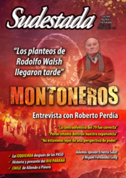

Buscar
El Catatumbo resiste
Estigmatizados por el gobierno de Santos y reprimidos por el Estado, los campesinos del Catatumbo persisten en su pelea por mejorar las condiciones de vida en una de las regiones más perjudicadas por el conflicto interno. Una trama que involucra al narcotráfico, al Plan Colombia y a un gobierno funcional a los intereses de Estados Unidos en la región. Pero también una historia de lucha de un pueblo que salió a exigir lo que le corresponde.
Edición N° 122
Septiembre 2013
Revista bimensual
Comprar edición impresaSumario
- "Los planteos de Rodolfo Walsh llegaron tarde"
- "No tuvieron la capacidad de escuchar a Walsh"
- Los explicadores de la derrota
- Censura
- Arqueología del Paraná
- Elecciones en el barrio
- ¿Un nuevo comienzo?
- Chile. 40 años no es nada
- "La canción es nuestro continente"
- El Catatumbo resiste
- El ejemplo de Vietnam
- El periodismo es un bichito avaro
- El proletario del lápiz
- Justicia poética
Compartir Articulo
"Voy a contarles a ustedes/ lo que es la explotación./ A diario nos viven robando/ los gringos de otra nación/ por eso nosotros luchamos incansablemente/ pa' controlar esta explotación"... Estos versos cantaban campesinos colombianos en los años ochenta. Treinta años después, diferentes sectores sostienen desde el campo el mismo argumento. Durante el transcurso de 2013, al calor de los diálogos de paz en La Habana entre el gobierno de Juan Manuel Santos y las Fuerzas Armadas Revolucionarias de Colombia (FARC); caficultores, arroceros, paperos, lecheros, paneleros, cañeros, cebolleros, productores de tomate, camioneros y mineros artesanales han paralizado las carreteras en los departamentos del Huila, Cauca, Nariño, Chocó, Quindío, Valle del Cauca, Boyacá, Norte de Santander, César, Arauca, Casanare y Tolima exigiéndole al gobierno por un lado, subsidios para poder vender sus productos, pues los Tratados de Libre Comercio con Estados Unidos, China y la Unión Europea han impactado negativamente en el comercio de sus productos; y por el otro, frenar lo que la política del presidente Santos ha denominado como "locomotora minera": la concesión de grandes territorios ricos en minerales a empresas transnacionales.
Si bien cada paro se prolongó durante varios días, en junio en la región del Catatumbo -ubicada en el Departamento del Norte de Santander-, los campesinos ocuparon las carreteras durante 53 días. Esta región ocupó las portadas de los diarios, la atención de las redes sociales y la preocupación de distintos sectores de la sociedad. Como quien urde la trama de un telar, las narraciones de los campesinos entrevistados por periodistas de medios como Telesur, Contravía y, en especial, Agencia Prensa Rural, fueron hilando la historia de la región desde la década del noventa, estremeciendo a los colombianos que no ignoran este tipo de acontecimientos, pues la mayoría de las regiones del país desde 1940 han padecido accionares similares.
Las narraciones de los campesinos remembraron la historia de la guerra civil colombiana, una guerra que responde a múltiples intereses estructurales y que ha enfrentado a compadres y hermanos en ejércitos contrarios. Un escenario lapidado por los fantasmas que transitan por las calles de pueblos desde la década del cuarenta y que no ha dado descanso al país.
Éxodo campesino
Los gobiernos colombianos se han caracterizado por encubrir los problemas que genera la guerra interna, afirmando ser el país de América Latina con la democracia más antigua y señalando a las guerrillas y al narcotráfico como causantes de todos los problemas.
A la lucha por la tierra y el poder político entre los partidos tradicionales del siglo pasado -el liberal y el conservador-, podrían adjuntarse elementos de conflicto agudizados durante las últimas décadas, como la corrupción, la represión del Estado, la desigualdad social y la pobreza. La lucha contra la concentración de la tierra empezó alrededor de 1935 en el campo, y la respuesta policial y violenta no se hizo esperar. Poco a poco, la lucha en el campo se fue tornando más difícil y se sumó la de los trabajadores organizados en sindicatos.
En 1948 es asesinado el candidato a la presidencia Jorge Eliecer Gaitán, quien venía denunciando la matanza sistemática de campesinos. A raíz de este hecho, despierta la ira popular y empieza una cruel guerra entre liberales y conservadores en el campo, manejada desde los sectores oligárquicos bogotanos, conocida como la época de "La Violencia". Es el inicio de un éxodo que no ha culminado: miles de campesinos abandonan sus tierras. El campo colombiano se convierte en escenario de desmembramiento, fusilamientos y despojo para una mayor concentración de la tierra en manos de latifundistas y terratenientes.
(La nota completa en Sudestada Nº 122, agosto de 2013)
Comentarios
Tania Camila Bonilla
Articulos más vistos


LIBRERÍA SUDESTADA

Colección infantil

Distribuidora de Libros

Suscripción

Sudestada en URUGUAY

Otros articulos de esta edición
 Nota de tapa; Entrevista con Ernesto Salas
Nota de tapa; Entrevista con Ernesto Salas
"No tuvieron la capacidad de escuchar a Walsh"
Historiador y ex militante montonero, la opinión de Ernesto Salas es una puerta abierta al debate. En réplica a la ...
 Nota de tapa: Entrevista con Roberto Perdía
Nota de tapa: Entrevista con Roberto Perdía
"Los planteos de Rodolfo Walsh llegaron tarde"
Fue el número dos de Montoneros. Desde ese lugar, hoy responde por un pasado de conflicto violento, de debate abierto ...
 Un río, una historia social
Un río, una historia social
Arqueología del Paraná
Casi cinco mil personas fueron evacuadas en las provincias de Misiones, Chaco y Corrientes como consecuencia de la crecida del ...
 Los cuadernos de Francisco Art Lissa
Los cuadernos de Francisco Art Lissa
Justicia poética
Francisco Art Lissa fue estrangulado el 21 de marzo de 2007, a los 23 años. Previamente, sus homicidas lo habían ...
 Malditos: Alberto Breccia
Malditos: Alberto Breccia
El proletario del lápiz
Amalia Yemelli tomó la taza de mate cosido, se limpió el delantal y quedó inmóvil viendo el sol por la ...
 Adelanto: Guerra del pueblo, ejército del pueblo
Adelanto: Guerra del pueblo, ejército del pueblo
El ejemplo de Vietnam
El militar vietnamita Vo Nguyen Giap escribió algunas de las páginas más leídas por la militancia argentina en la década ...